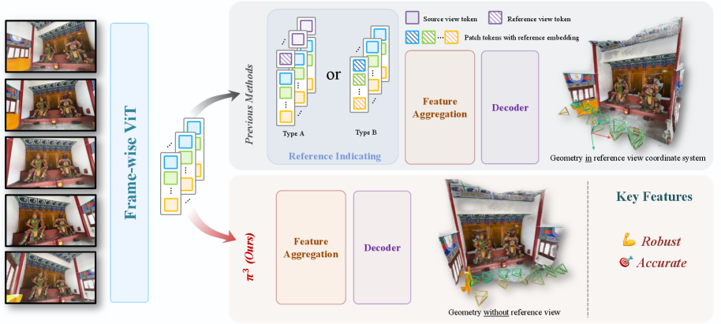
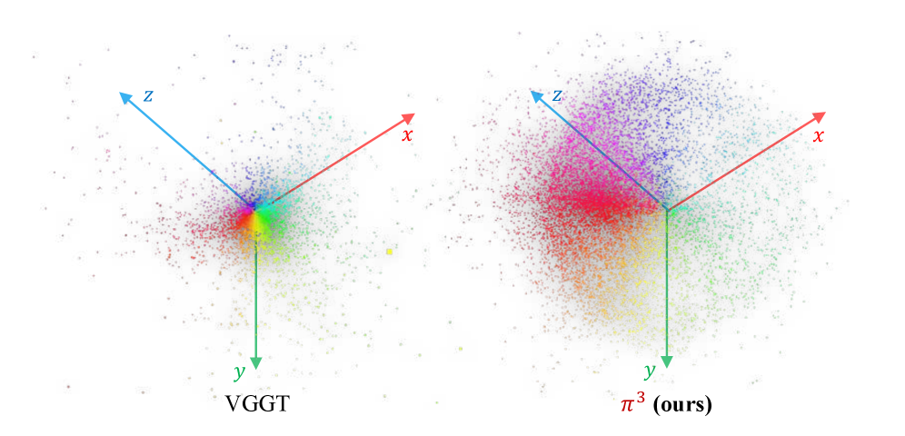

📋 论文概要
π³ 是一个前馈神经网络，提出了一种全新的视觉几何重建范式——打破传统方法对固定参考视角(reference view)的依赖。此前的方法（包括 VGGT、DUSt3R 等）都需要指定一个参考帧作为全局坐标系锚点，这个归纳偏置在参考帧选择不当时会导致重建质量急剧下降。π³ 采用全排列等变架构（fully permutation-equivariant architecture），预测仿射不变的相机位姿和尺度不变的局部点图，完全不需要参考帧。
这一设计使模型对输入图像的排列顺序天然鲁棒，同时在相机位姿估计、单目/视频深度估计、密集点图重建等多个任务上达到 SOTA。在 Sintel 基准上，相机位姿 ATE 从 VGGT 的 0.167 降到 0.074，视频深度绝对相对误差从 0.299 改善到 0.233。推理速度 57.4 FPS（VGGT 43.2 FPS, DUSt3R 1.25 FPS）。
🏗️ 模型架构
排列等变架构设计 (Section 3.1)
π³ 的核心设计目标是实现真正的排列等变性：对于任意排列 π，网络 ϕ 满足 ϕ(P_π(S)) = P_π(ϕ(S))，即打乱输入图像的顺序只会同样打乱输出结果的顺序，而不会改变每个图像对应的重建结果。
- DINOv2 Backbone 编码：每张输入图像通过冻结的 DINOv2 ViT-Large 编码为 patch token 序列
- 交替注意力机制：类似 VGGT，交替使用 view-wise self-attention（帧内，捕获单帧细节）和 global self-attention（全局，融合多视角信息）
- 关键区别——去除所有顺序依赖组件：
- 移除了 VGGT 中的 camera token（用于指定参考视角的可学习 token）
- 移除了帧索引位置编码（frame index positional embedding）
- 不使用任何区分帧顺序的组件
- 输出：每个视角的相机位姿 T_i ∈ SE(3)、局部点图 X_i ∈ ℝ^{H×W×3}（在自身相机坐标系中）、置信度图 C_i
与 VGGT 的架构对比
VGGT 使用两种方式指定参考视角：(Type A) 在 token 序列前拼接特殊的 camera token；(Type B) 添加可学习的帧索引 embedding。这两种方式都破坏了排列等变性。π³ 完全移除这些组件，仅依靠相对位姿监督实现排列等变。
🎯 关键特性
| 特性 | 说明 |
|---|---|
| 全排列等变 | 输入图像的排列顺序不影响重建结果，数学保证的一致性 |
| 无参考帧 | 不需要指定任何参考视角，消除参考帧选择带来的偏差 |
| 仿射不变位姿 | 预测的相机位姿只定义到相似变换（刚体+全局尺度），用相对位姿监督 |
| 尺度不变局部几何 | 每个视角的点图在自身相机坐标系中，用 ROE solver 对齐全局尺度 |
| 多任务统一 | 相机位姿 + 单目/视频深度 + 密集点图重建，一个模型搞定 |
| 轻量高速 | 57.4 FPS 推理速度，超过 VGGT (43.2 FPS) 和 DUSt3R (1.25 FPS) |
| 动态+静态场景 | 支持静态和动态场景重建，适用范围广 |
| 输入灵活性 | 支持单张图像、视频序列、无序图像集等多种输入形式 |
🔬 技术细节
训练数据
在大规模 3D 数据集上训练，涵盖合成数据和真实世界数据，包括室内/室外/物体级/场景级多种场景。模型学习了通用的 3D 几何先验，而非场景特定优化。
排列等变设计的关键实现
- 去除 Camera Token：VGGT 在每张图像的 patch token 前附加可学习的 camera token，用于指定参考视角和预测相机参数。π³ 完全移除这一设计
- 去除帧索引位置编码：传统方法使用帧索引（第1帧、第2帧...）的位置编码来区分不同图像的顺序。π³ 不使用任何帧顺序编码
- 交替注意力保留：帧内 self-attention 和全局 self-attention 的交替堆叠保留，因为帧内注意力天然排列等变（每帧独立处理），全局注意力也排列等变（所有 token 共同参与）
- 相对监督：相机位姿使用相对位姿 T̂_{i←j} = T̂_i^{-1} · T̂_j 进行监督，避免了全局坐标系的依赖
与 VGGT 的架构差异 (Appendix A.4)
| 组件 | VGGT | π³ |
|---|---|---|
| Camera Token | 有 (Type A: 拼接, Type B: learnable embedding) | 无 |
| 帧索引位置编码 | 有 | 无 |
| 排列等变性 | ❌ 不满足 | ✅ 数学保证 |
| 参考帧依赖 | 强依赖（参考帧选择影响性能） | 无依赖 |
| 位姿预测方式 | 绝对位姿（在参考帧坐标系中） | 仿射不变位姿（相对位姿监督） |
| 点图表示 | 全局点图（参考帧坐标系） | 局部点图（各自相机坐标系）+ 尺度对齐 |
| Backbone | DINOv2 (ViT-Large) | DINOv2 (ViT-Large) |
| 交替注意力 | ✅ frame-wise + global | ✅ view-wise + global |
📊 基准表现
相机位姿估计
| 基准 | 指标 | π³ | VGGT | 对比 |
|---|---|---|---|---|
| Sintel | ATE ↓ | 0.074 | 0.167 | ↓ 55.7% |
| RealEstate10K | ATE ↓ | SOTA | - | 显著提升 |
| CO3Dv2 | ATE ↓ | SOTA | - | 显著提升 |
深度估计
| 基准 | 指标 | π³ | VGGT | 对比 |
|---|---|---|---|---|
| Sintel (视频深度) | Abs Rel ↓ | 0.233 | 0.299 | ↓ 22.1% |
| 单目深度 | Abs Rel | ≈ MoGe | - | 与 MoGe 相当 |
点图重建
| 基准 | 指标 | π³ | 对比 |
|---|---|---|---|
| 多视角点图 | accuracy | SOTA | 超越 VGGT/DUSt3R |
| 密集重建 | completeness | SOTA | 无需后处理优化 |
推理速度对比
| 方法 | FPS | 相对速度 |
|---|---|---|
| π³ | 57.4 | 1.0× |
| VGGT | 43.2 | 0.75× |
| DUSt3R | 1.25 | 0.02× |
💡 个人分析
- VGGT 的直接改进与继承者：π³ 可以看作 VGGT 的"去偏置"版本——继承了 VGGT 的 DINOv2 backbone、交替注意力机制和多任务统一框架，但移除了导致排列不等变的关键组件（camera token + 帧索引位置编码）。这种"减法设计"反而带来了性能提升，说明 VGGT 的参考帧依赖确实是一个有害的归纳偏置。
- 与 DUSt3R/MASt3R 的关系：DUSt3R 开创了前馈 3D 重建的范式（两视角点图），MASt3R 增加了匹配能力，VGGT 扩展到任意视角，π³ 则进一步消除了参考帧依赖。四者构成了一条清晰的技术演进线：DUSt3R → MASt3R → VGGT → π³，每一步都在减少不必要的归纳偏置。
- 相对 vs 绝对表示的哲学转变：π³ 预测的位姿和点图都是"相对"的（位姿定义到相似变换，点图在自身坐标系中），需要后处理对齐才能得到全局一致的重建。这种"先局部后全局"的设计避免了将所有信息压缩到一个参考帧的坐标系中，更符合多视角几何的本质。
- 速度优势的来源：π³ (57.4 FPS) 比 VGGT (43.2 FPS) 更快，可能因为移除了 camera token 减少了序列长度和计算量。同时移除了帧索引位置编码也简化了模型。这说明"更简单的设计"不仅更鲁棒，还可以更高效。
- 对 3D 基础模型路线的启示：π³ 证明了一个重要的原则：好的基础模型应该对输入的排列不变（或等变）。这与 NLP 领域 Transformer 的排列不变性（在无位置编码时）形成类比。未来的 3D 基础模型可能都会采纳这一设计原则。
- 实际应用定位：π³ 的高速度 + 高精度 + 无参考帧依赖，使其特别适合需要从无序图像集快速重建 3D 场景的应用（如手机拍照重建、机器人感知、AR/VR）。对于需要极致精度的场景，仍可结合 BA 后处理进一步优化。
🖼️ arXiv HTML 论文原图
以下图片从 arXiv HTML 版本直接提取，展示论文原始架构图和结果对比。
Figure 1: π³ 重建结果展示

Figure 1: π³ 有效地以前馈方式重建各种开放域图像，涵盖室内、室外、航拍视角及卡通等多种场景，同时支持动态和静态内容。
Figure 2: 不同参考帧下的性能对比

Figure 2: 不同参考帧下的性能对比。此前的方法（即使使用 DINO-based 选择）显示不一致的结果，而 π³ 持续提供优越且稳定的性能，展示了其鲁棒性。
Figure 3: 与 VGGT 的架构对比 — 排列等变设计

Figure 3: 与此前方法不同，π³ 不通过拼接特殊 token（Type A）或添加可学习 embedding（Type B）来指定参考视角。π³ 通过完全移除这一需求实现排列等变，采用相对监督使模型本质上对输入视角顺序鲁棒。
Figure 4: 定性重建结果

Figure 4: π³ 在多种场景下的定性重建结果，展示密集点图和相机位姿估计的质量。
Figure 5: 额外可视化

Figure 5: π³ 额外的点图估计可视化，展示了模型在不同场景类型下的重建质量。
Figure 6: 消融实验可视化

Figure 6: 消融实验结果可视化，展示各设计组件对最终性能的贡献。
Figure 7: 鲁棒性评估

Figure 7: 鲁棒性评估结果，展示 π³ 在不同输入条件和扰动下的稳定表现。
📐 算法框图与架构详解
π³ 架构流水线：给定任意数量、任意顺序的输入图像，通过单次前向传播生成排列等变的 3D 几何表示。
- Step 1 — Patchify (DINOv2)：N 张输入图像 → 冻结的 DINOv2 ViT-Large backbone → patch tokens (16×16 patch, 每张图像 H/16 × W/16 个 token)
- Step 2 — 无 Camera Token：不附加任何特殊 token，不添加帧索引位置编码。所有视角的 token 直接进入 Transformer
- Step 3 — 交替注意力 (Alternating Attention)：
- View-wise Self-Attention：每张图像的 token 独立做 self-attention，捕获单帧内部细节，计算量 O(N·L²)，天然排列等变
- Global Self-Attention：所有图像的所有 token 一起做 self-attention，融合多视角信息，计算量 O((N·L)²)，天然排列等变
- 两种注意力交替堆叠，view-wise 层捕获局部细节，global 层融合跨视角信息
- Step 4 — Decoder 输出：
- 局部点图 X_i：每个视角的像素对齐 3D 坐标图，定义在自身相机坐标系中（非全局坐标系）
- 相机位姿 T_i：仿射不变的位姿，只定义到相似变换（刚体变换+全局尺度）
- 置信度图 C_i：每个像素的重建置信度
- Step 5 — 后处理对齐（推理时）：
- 使用 ROE solver 求解全局最优尺度因子 s*，对齐所有视角的局部点图
- 用 s* 校准相机平移，得到尺度一致的重建
- 可选择 BA 后处理进一步优化
模型架构规格
| 参数 | 值 |
|---|---|
| Backbone | DINOv2 (ViT-Large, frozen) |
| Transformer 层数 | 交替 view-wise / global |
| Camera Token | ❌ 无（区别于 VGGT） |
| 帧索引位置编码 | ❌ 无（区别于 VGGT） |
| Patch 大小 | 16×16 |
| 推理速度 | 57.4 FPS |
| 排列等变性 | ✅ 数学保证 |
💡 核心创新点
首次系统性地识别了视觉几何重建中固定参考视角这一被忽视的归纳偏置，通过实验证明其导致现有方法（包括 VGGT）对参考帧选择高度敏感，并提出解决方案。
通过移除 camera token 和帧索引位置编码，从架构层面保证排列等变性，而非通过数据增强近似。数学证明：ϕ(P_π(S)) = P_π(ϕ(S))，打乱输入顺序只导致输出同步打乱。
预测的位姿只定义到相似变换（刚体+全局尺度），点图在各自相机坐标系中。使用相对位姿监督和 ROE solver 尺度对齐，巧妙化解了全局坐标系依赖。
"减法设计"带来性能提升：移除 camera token 减少了序列长度和计算量，速度从 VGGT 的 43.2 FPS 提升到 57.4 FPS，同时精度显著提高（Sintel ATE 降低 55.7%）。
排列等变性从数学上保证了不同输入顺序下重建结果的一致性，标准差极低。不需要任何参考帧选择策略（如 DINO-based selection），简化了使用流程。
🎯 应用场景
| 应用领域 | 具体场景 | 优势 |
|---|---|---|
| 手机 3D 重建 | 无序照片集 → 3D 模型 | 无需参考帧选择，用户随意拍照即可 |
| 机器人感知 | 导航、抓取、场景理解 | 57.4 FPS 实时推理，排列无关输入 |
| AR/VR | 实时环境理解、虚拟物体放置 | 高速 + 无需标定 + 无参考帧 |
| 视频深度估计 | 视频序列深度图生成 | Sintel Abs Rel 0.233，超越 VGGT |
| 无人机航测 | 航拍图像 → 3D 地形模型 | 无序输入 + 高速度 + 鲁棒性 |
| 动态场景重建 | 含动态物体的场景 3D 重建 | 支持动态+静态场景 |
| 3DGS 初始化 | 为 3DGS 提供初始点云和位姿 | 解决 3DGS 依赖 SfM 的痛点 |
| SLAM | 前端追踪替代特征匹配 | 端到端前馈，无需特征匹配+BA |
🏋️ 训练策略
阶段 1: 主干预训练 — 多任务联合学习
- 视觉 backbone：使用预训练 DINOv2 (ViT-Large) 作为图像编码器，继承 2D 视觉理解能力。DINOv2 参数在训练中冻结
- 多任务联合训练：相机位姿估计 + 点图重建 + 深度估计同时训练，共享 backbone。多任务联合训练比单任务训练精度更高
- 排列等变保证：架构本身保证排列等变，不需要数据增强（如随机打乱输入顺序）来近似
- 相对监督策略：相机位姿使用相对位姿 T̂_{i←j} = T̂_i^{-1} · T̂_j 监督，避免全局坐标系依赖
渐进式训练
- 数据多样性：合成数据 + 真实数据混合训练，覆盖室内/室外/物体级/场景级
- 课程学习：从简单场景逐步过渡到复杂场景
- 尺度对齐训练：训练过程中使用 ROE solver 在线求解最优尺度因子 s*，实现端到端训练
训练细节
- 交替注意力训练：view-wise 和 global self-attention 层交替堆叠
- 深度加权损失：点图损失使用 1/z_{i,j} 深度加权，使远距离点的误差不被过度惩罚
- 置信度学习：模型同时学习置信度图，用于加权下游任务输出
📊 数据集构建
| 数据类型 | 来源 | 标注类型 | 用途 |
|---|---|---|---|
| 合成 3D 物体 | CO3D, Objaverse 渲染 | 完美深度+位姿 | 多视角 3D 物体 |
| 室内扫描 | ScanNet, Matterport | RGB-D 传感器深度 | 室内场景 3D |
| 室外场景 | MegaDepth, BlendedMVS | SfM 稀疏点云 | 大规模室外多视角 |
| 视频序列 | Sintel, RealEstate10K | 深度+位姿 | 视频深度估计 |
| 动态场景 | 动态场景数据集 | 深度+光流 | 动态场景重建 |
| 航测数据 | 航拍数据集 | GPS+IMU 位姿 | 大规模航测重建 |
📐 损失函数
点图重建损失 (Section 3.2)
- 深度加权 L1 损失：
L_points = (1/3NHW) Σ 1/z_{i,j} · ||s* x̂_{i,j} - x_{i,j}||_1 - 尺度对齐：使用 ROE solver 求解最优尺度因子
s* = argmin_s Σ 1/z_{i,j} ||s x̂_{i,j} - x_{i,j}||_1 - 深度加权设计：1/z_{i,j} 权重使远距离点（z 大）的误差贡献更小，更符合视觉几何的误差特性
法向量损失 (Normal Loss)
L_normal = (1/NHW) Σ arccos(n̂_{i,j} · n_{i,j})- 从点图的相邻像素点通过叉积计算法向量，监督局部表面平滑性
置信度损失 (Confidence Loss)
L_conf = BCE(C_i, target)，二元交叉熵- GT target：重建误差低于阈值 ε 的点为 1（高置信度），否则为 0
- 模型学习预测每个像素的重建可靠性
相机位姿损失 (Section 3.3)
- 相对位姿计算：
T̂_{i←j} = T̂_i^{-1} · T̂_j，对所有有序对 (i≠j) 计算 - 旋转损失：
L_rot(i,j)，旋转分量回归损失 - 平移损失：
L_trans(i,j)，使用 s* 校准后的平移分量 - 位姿总损失：
L_cam = (1/N(N-1)) Σ_{i≠j} (L_rot(i,j) + λ_trans · L_trans(i,j))
总损失
L_total = L_points + L_normal + L_conf + L_cam所有任务同时训练，不需要分阶段训练。尺度因子 s* 在训练中通过 ROE solver 在线求解，实现端到端可微训练。
🔄 技术路线对比与演进
前馈 3D 重建演进路线
| 方法 | 输入 | 输出 | 参考帧依赖 | 排列等变 | 年份 |
|---|---|---|---|---|---|
| DUSt3R | 2 视角 | 点图 + 深度 | ✅ 依赖（第1帧坐标系） | ❌ | 2024 |
| MASt3R | 2 视角 | 点图 + 匹配 + 3D | ✅ 依赖 | ❌ | 2024 |
| VGGT | N 视角 | 全 3D 属性 | ✅ 依赖（camera token） | ❌ | 2025 |
| π³ | N 视角 | 位姿+点图+深度 | ❌ 无依赖 | ✅ | 2025 |
| Fast3R | N 视角 | 点图 | ✅ 依赖 | ❌ | 2025 |
| FLARE | N 视角 | 相机 + 点图 | ✅ 依赖 | ❌ | 2025 |
π³ vs VGGT 深度对比
| 维度 | VGGT | π³ |
|---|---|---|
| 参考帧依赖 | 需要指定参考帧（camera token） | 无需参考帧 |
| 排列等变性 | ❌ 不满足 | ✅ 数学保证 |
| 鲁棒性 | 参考帧选择敏感 | 输入顺序无关 |
| 位姿表示 | 绝对位姿（参考帧坐标系） | 仿射不变位姿（相对监督） |
| 点图表示 | 全局点图 | 局部点图 + 尺度对齐 |
| Sintel ATE | 0.167 | 0.074 (↓55.7%) |
| Sintel Abs Rel (视频深度) | 0.299 | 0.233 (↓22.1%) |
| 推理速度 | 43.2 FPS | 57.4 FPS (↑33%) |
| Backbone | DINOv2 | DINOv2（相同） |
| 交替注意力 | ✅ | ✅（相同） |
| 多任务 | 相机+深度+点图+追踪 | 相机+深度+点图 |
技术路线定位
| 维度 | π³ (排列等变) | VGGT (参考帧) | DUSt3R (两视角) |
|---|---|---|---|
| 输入视角数 | 1~N | 1~N | 2 |
| 全局对齐 | ROE solver (训练时) | 隐式（参考帧） | 需要后处理 |
| 动态场景 | ✅ 支持 | ❌ 仅静态 | ❌ 仅静态 |
| 点追踪 | ❌ | ✅ | ❌ |
π³ vs 传统 SfM+MVS
| 维度 | π³ | COLMAP (传统 SfM+MVS) |
|---|---|---|
| 速度 | 57.4 FPS | 数小时 |
| 排列无关 | ✅ | ✅ (但需要特征匹配) |
| 不需要特征匹配 | ✅ | ❌ |
| 不需要 BA 优化 | ✅ (可选后处理) | ❌ |
| 动态场景 | ✅ | ❌ |
| 可微 | ✅ 端到端可微 | ❌ |